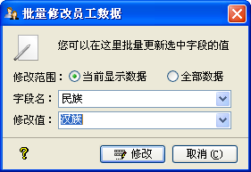

| 档案操作 -批量修改 |
|
您可以对员工档案进行批量修改操作
，它在[档案管理]->[批量修改]及员工信息表格右键菜单中F，界面如下图所示：  在字段名中，列出了可以修改的字段列表，它分为一般字段、列表字段及日期字段三类，您可以在修改值中设定欲修改字段的值。若是列表字段，修改值会显示为下拉框，您可以选择也可以输入；若是日期字段，则修改值为日期控件，您可以选择日期值。 修改范围指定了您要修改的值是当前显示的员工信息还是全部员工信息。您执行完修改操作后，结果直接反馈于主界面中。 |